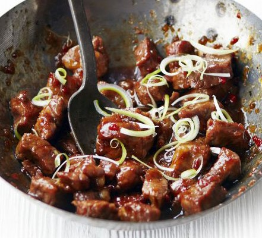

Vietnamese-style Caramel Pork

Description
Stir-fry chunks of pork with shallots, ginger and chilli in a wok then add fish sauce and brown sugar for a sweet, sticky and spicy sauce.
Ingredients
- 1 ½ tbsp groundnut oil
- 500g pork shoulder steaks, cut into bite-sized chunks
- 2 shallots, finely chopped
- 1 tbsp finely grated ginger
- 1 red chilli, deseeded and finely chopped
- 75g brown sugar
- 1 tbsp fish sauce, plus extra to taste
- 1-2 tsp chilli sauce (we used sriracha)
- 4 spring onions, halved and shredded lengthways
- steamed rice, to serve
- pak choi, to serve
Steps
- Heat 1 tbsp of the oil in a wok over a high heat and stir-fry the pork in batches until browned all over.
Remove with a slotted spoon and set aside.
- Turn the heat right down and add the remaining oil, then stir in the shallots, ginger and chilli.
Cook over a low heat for a couple of mins until just starting to soften. Add the sugar, fish sauce and 200ml water to the pan
and stir everything together. Bring to the boil, stirring, so that the sugar dissolves, then return the pork to the pan.
Bubble vigorously for 8-10 mins until the sauce thickens to coat the meat and become glossy. Taste and stir in a little more
fish sauce, if needed, along with the chilli sauce. Sprinkle with the spring onions and serve with steamed rice and pak choi.